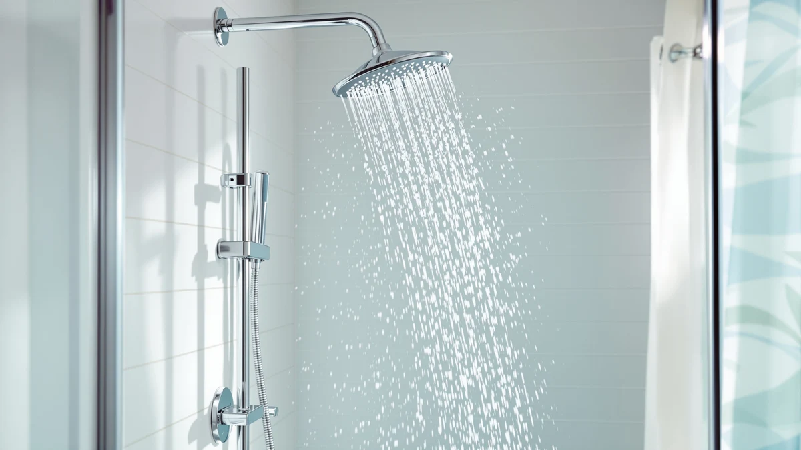

How to Clean Shower Heads From Hard Water: Complete Guide (2026)
Prices and picks verified as of September 2026. Independent, reader-supported reviews.


Things to Know Before You Buy
- It's mineral scale, not dirt: hard water leaves calcium and magnesium deposits that block the tiny holes in a shower head, which is the real cause of uneven or weak spray.
- Vinegar beats scrubbing alone: the acid in white vinegar dissolves limescale, so you spend less time picking at nozzles with a toothbrush.
- You don't have to remove the shower head: a vinegar-filled bag secured with a rubber band works almost as well as a full soak in a bowl.
- Buildup returns faster with harder water: homes with unusually hard water may need to repeat this cleaning every four to six weeks instead of every few months.
If you've never looked up how to clean shower heads from hard water, the white crust clogging your nozzles is calcium and magnesium mineral deposits, not dirt, and it builds up every time hard water evaporates on the metal. Those deposits narrow the holes one layer at a time, which is why your once-strong spray now sputters, sprays sideways, or dribbles out of only half the nozzles. The fix does not require a plumber or a replacement part. A vinegar soak dissolves the mineral scale in under an hour, and the same acid works whether your shower head is chrome, brushed nickel, or matte black.
Hard water affects roughly 85 percent of homes in the United States, according to the US Geological Survey, so this buildup is common rather than a sign you did anything wrong. The steps below work whether your shower head is still mounted on the arm or already sitting in a drawer because the spray got too weak to use. You'll need about 45 minutes, most of it hands-off soak time, and a few supplies you likely already keep under the sink. If the deposits keep coming back within a few weeks, the final section covers filtered shower heads built to resist hard water buildup in the first place.
What You'll Need
Everything here handles hard water mineral buildup without harsh chemicals, and most of it is already in your kitchen or bathroom cabinet.
- Supplies: white distilled vinegar, baking soda, and a plastic sandwich bag with a rubber band
- Tools: an old toothbrush and an adjustable wrench
Step 1: Remove the shower head from the arm
Turn the shower head counterclockwise by hand first. Most models loosen without tools once you get a firm grip near the base. If mineral deposits have fused the connection, wrap a cloth around the fitting to protect the finish, then grip it with an adjustable wrench and turn slowly.
Removing the head entirely gives you a better soak than cleaning it in place, since you can fully submerge every nozzle in vinegar rather than relying on a bag that only reaches the face of the head. Before you unscrew it, check for a rubber or plastic washer inside the connector piece. Set it aside somewhere you won't lose it, because a missing washer causes leaks when you reattach the head later.
If your shower head won't budge at all, skip removal and move to the bag method in the next step instead of forcing it. A cracked shower arm is a bigger repair than a slow leak from hard water buildup.
Step 2: Soak the shower head in white vinegar
Fill a bowl with enough plain white vinegar to fully cover the shower head, then let it soak for 30 to 60 minutes. Vinegar is acidic enough to dissolve calcium and magnesium scale without damaging chrome, stainless steel, or most coated finishes. Heavier buildup benefits from the longer end of that window, so give it the full hour if you can already see white crust on the nozzle face.
If you left the shower head attached to the arm, pour vinegar into a sturdy plastic bag, slip it over the head so the nozzles sit in the liquid, and secure the opening around the arm with a rubber band. This in-place method takes a bit longer to work since it only cleans the exposed side of each nozzle, so budget closer to 60 minutes.
Avoid soaking brass, gold-toned, or matte black finishes for longer than an hour, since prolonged acid exposure can dull the coating. A shorter, more frequent soak protects the finish better than one long session.
Step 3: Scrub the nozzles with an old toothbrush
Pull the shower head out of the vinegar and take a close look at the nozzle face. The soak should have softened most of the scale into a chalky residue that comes off with light pressure. Work an old toothbrush across the nozzle plate in small circles, paying extra attention to any holes that still look partially blocked.
For deposits that resist the toothbrush, make a thick paste from baking soda and a splash of water and press it into the stubborn spots for a few minutes before scrubbing again. The mild abrasive in baking soda combined with the leftover vinegar residue creates a gentle fizzing action that helps lift what the soak alone didn't clear.
Skip metal scouring pads or wire brushes here. They scratch chrome and brushed nickel finishes, and those scratches attract mineral buildup faster the next time hard water passes over the surface.
Step 4: Rinse and clear the remaining holes
Hold the shower head under hot running water and let it flush from the back, pushing loosened mineral debris out through the nozzle holes rather than deeper into the fitting. Hot water clears residue faster than cold, since it keeps any remaining softened scale from re-hardening before it rinses away.
Check each nozzle individually. If a few holes still look dark or blocked, straighten a paperclip or grab a toothpick and gently work it into the opening to push the blockage out. Go slowly here. Metal shower heads have small factory-drilled holes, and forcing a pick in at an angle can widen or distort them.
Once every hole runs clear, give the shower head one more full rinse to wash away any vinegar smell and loose grit before you put it back on the wall.
Step 5: Reattach the shower head and test the spray
Wrap two or three turns of plumber's tape clockwise around the threads on the shower arm before you reattach anything. This keeps the connection watertight and makes the next removal easier, since the head won't corrode onto the threads the way it did before.
Screw the shower head back on by hand until it's snug, then give it a final quarter turn with a cloth-wrapped wrench only if it needs to sit flush against the arm. Overtightening strips the threads and causes the exact kind of leak you set out to fix.
Turn the water on and watch the spray pattern for a few seconds. Every nozzle should push out an even, consistent stream. If a handful of holes still spray weakly or at odd angles, repeat the vinegar soak for another 30 minutes rather than assuming the shower head is done for. Hard water buildup that took months to form sometimes needs a second round to fully clear.
Common Mistakes to Avoid
The most common mistake is reaching for bleach or a harsh commercial descaler instead of vinegar. Bleach doesn't dissolve mineral scale, and mixing cleaning chemicals under a shower head in a closed bathroom is a real fume risk. Stick with vinegar and baking soda, which handle hard water deposits without the hazard.
Skipping the wrench-and-cloth step is another one. Grabbing bare metal with pliers or a wrench scratches the finish, and those scratches become new places for mineral buildup to grip onto faster next time. Always protect the fitting with a cloth before you apply real force.
Soaking for too long causes its own problems, especially on brass, gold, or matte black finishes, where extended acid exposure can strip the coating and leave a dull or blotchy patch that no amount of polishing fixes. Set a timer instead of leaving the shower head in vinegar overnight out of convenience.
People often clean the shower head but ignore the shower arm and the washer inside the connector. Scale builds up there too, and a scaled or cracked washer causes leaks even after the head itself sprays perfectly. Wipe down the arm threads and check the washer every time you clean a shower head from hard water buildup.
Our Top Picks
Replacing a shower head that's too scaled or corroded to save is sometimes faster than another round of cleaning. These three filtered picks come up often in owner reviews from hard water households, since their filters slow down how quickly scale reforms.

Editor's Pick
SR SUN RISE 20+3 Stage
A 20-stage filter cartridge that owners say noticeably softens hard water spray and slows mineral buildup between cleanings.
$36.99
Check Price on Amazon
Best Value
Voolan Rain Shower Head -
A wide rain-style head at a lower price point, with reviewers noting it holds up well against limescale for the cost.
$29.99
Check Price on Amazon
Premium Choice
Cobbe High Pressure Filtered Shower
A high-pressure filtered head that reviewers credit with maintaining strong flow even in homes with notably hard water.
$36.97
Check Price on AmazonFrequently Asked Questions
Every four to eight weeks in most homes with hard water, and closer to every four weeks if your water supplier rates your water as unusually hard. Homes on softened water can usually stretch this to every few months.
Vinegar works as well as most commercial descalers for shower heads and costs less, and you avoid mixing chemical products in a small, enclosed bathroom. If you already own a descaler labeled safe for chrome and metal fixtures, follow its instructions instead of vinegar, but never combine the two products.
Prolonged soaking can dull coated finishes like matte black, brushed gold, and oil-rubbed bronze. Keep the soak under 30 minutes on these finishes, rinse promptly, and avoid scrubbing with anything abrasive.
Hard water minerals rebuild continuously, so any shower head will reclog eventually without a filter. If yours clogs again within a couple of weeks, the water in your home is likely on the harder end of the scale, and a filtered shower head will hold up longer between cleanings than a standard one.
No. A vinegar-filled plastic bag sealed around the head with a rubber band cleans the nozzle face reasonably well without any disassembly. Removing the head gets you a deeper clean since the vinegar reaches every nozzle from both sides, so it's worth the extra few minutes for a head that's badly clogged.
Verdict
Knowing how to clean shower heads from hard water comes down to one household staple: white vinegar. A 30- to 60-minute soak, a quick scrub with an old toothbrush, and a hot water rinse clear out the calcium and magnesium deposits responsible for weak, uneven spray, and the whole process costs under $10 in supplies you probably already have under the sink. Do this every four to eight weeks and most standard shower heads will keep spraying evenly for years.
If your shower head keeps clogging within a couple of weeks no matter how often you clean it, the water in your home is likely hard enough to warrant a filtered replacement. The SR SUN RISE 20+3 Stage was our top pick among the filtered options here, since its multi-stage cartridge is designed specifically to slow the mineral buildup that makes frequent cleaning necessary in the first place.